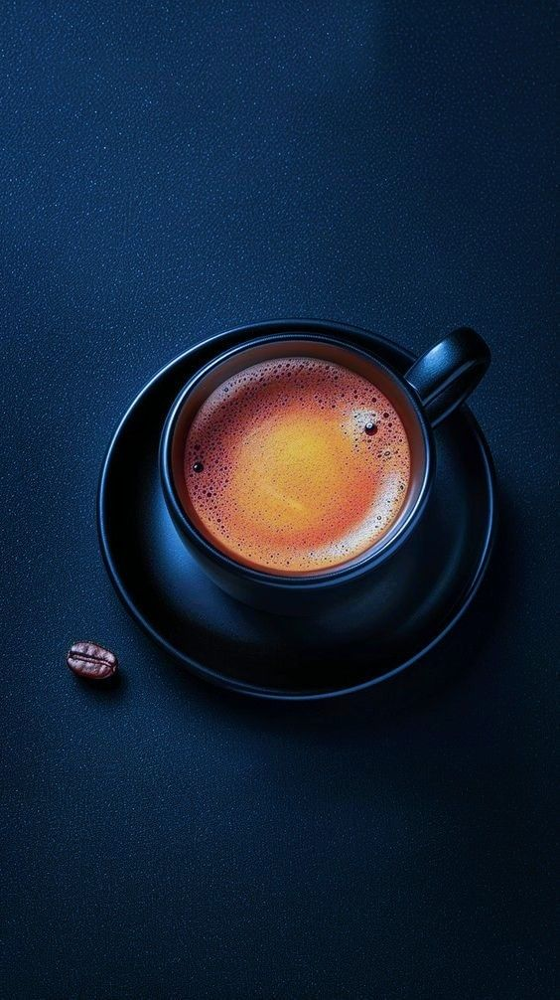

CV
HABILIDADES TÉCNICAS.
Toolkit.
Design-to-Code.
AI Tools.
Metodologías.
Design Process.
Prototyping
EXPERIENCIA LABORAL.

e-commerceUX/UI Designer & Front End Developer
Diseñé la identidad visual de esta e-commerce aplicando la metodología Design
Thinking, partiendo desde la investigación de usuario hasta la creación de componentes en
Figma.
Realicé el wireframe de baja fidelidad hasta convertirla en una página
funcional y responsiva, utilizando HTML5, CSS3 y JavaScript.
Colaboré en un entorno ágil para la integración del frontend con una API en Java,
participando en la lógica del backend y la gestión de la base de datos en MySQL.
FORMACIÓN EDUCATIVA.
Desarrolladora Java Full Stack.
GENERATION MÉXICOConstruir aplicaciones web completas, dominando el frontend y el backend.
Ingeniería Textil.
Instituto Politécnico Nacional (IPN)Enfoque en procesos industriales y optimización de producción.
Diseño de Modas.
CETIS 9 - Josefa Ortiz de DomínguezFundamentos de diseño, teoría del color, tendencias y gestión de negocios.